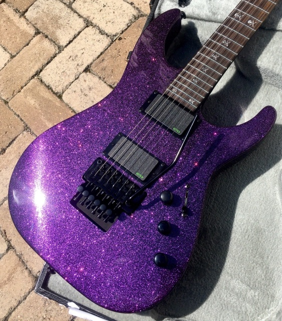
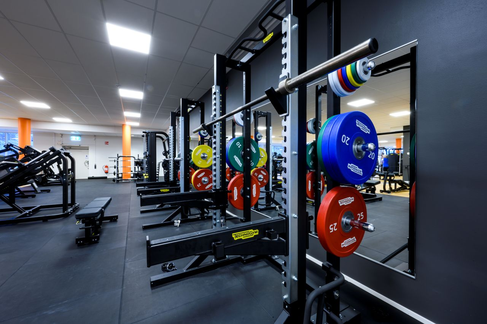

Detta är de hobbys jag har ett stort intresse för

Jag har ett stort intresse för gitarr, jag har spelat i ungefär 2 år nu.
Jag spelar mycket Pantera och Metallica men jag vill börja spela lite mer avancerad metall
och även i olika stämt som D standard, drop C med mera.

Jag har även haft ett stort intresse för att träna på gym.
Jag började efter att jag fyllt 15 och har fortsatt sedan dess.
Jag gillar även att vara med vänner och familj, spela datorspel,
vara ute, kolla serier och gå på konserter.